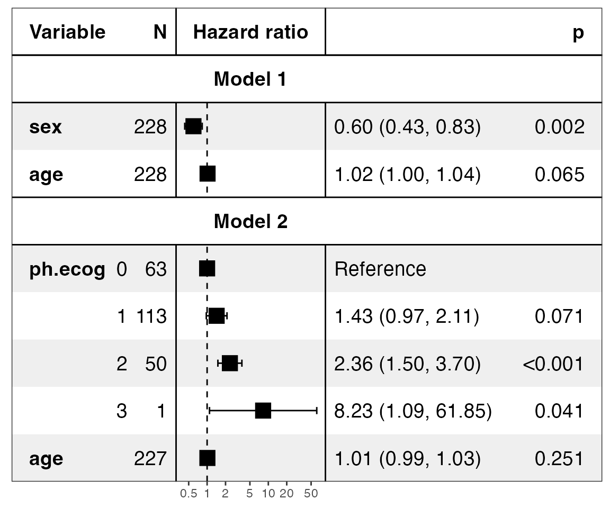
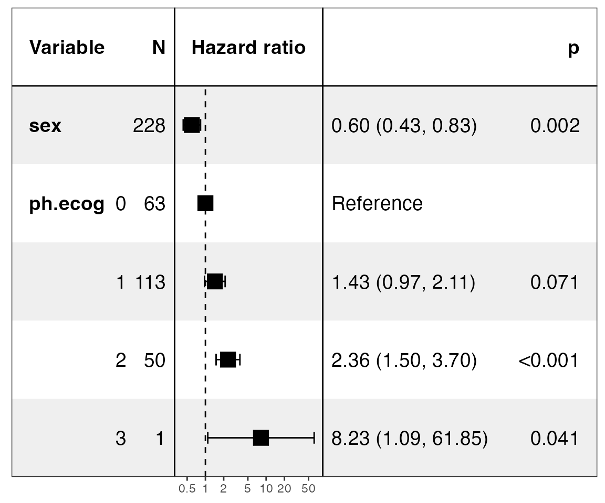

ezcox: Easily Process a Batch of Cox Models
Shixiang Wang SYSUCC
2021-09-16
Source:vignettes/ezcox.Rmd
ezcox.RmdThe goal of ezcox is to operate a batch of univariate or multivariate Cox models and return tidy result.
Installation
You can install the released version of ezcox from CRAN with:
install.packages("ezcox")And the development version from GitHub with:
# install.packages("devtools")
devtools::install_github("ShixiangWang/ezcox")Visualization feature of ezcox needs the recent version of forestmodel, please run the following commands:
remotes::install_github("ShixiangWang/forestmodel")Example
This is a basic example which shows you how to get result from a batch of cox models.
library(survival)
library(ezcox)
#> Welcome to 'ezcox' package!
#> =======================================================================
#> You are using ezcox version 1.0.1
#>
#> Project home : https://github.com/ShixiangWang/ezcox
#> Documentation: https://shixiangwang.github.io/ezcox
#>
#> Run citation("ezcox") to see how to cite 'ezcox'.
#> =======================================================================
#>
data(lung)
#> Warning in data(lung): data set 'lung' not found
head(lung)
#> inst time status age sex ph.ecog ph.karno pat.karno meal.cal wt.loss
#> 1 3 306 2 74 1 1 90 100 1175 NA
#> 2 3 455 2 68 1 0 90 90 1225 15
#> 3 3 1010 1 56 1 0 90 90 NA 15
#> 4 5 210 2 57 1 1 90 60 1150 11
#> 5 1 883 2 60 1 0 100 90 NA 0
#> 6 12 1022 1 74 1 1 50 80 513 0
# Build unvariable models
ezcox(lung, covariates = c("age", "sex", "ph.ecog"))
#> => Processing variable age
#> ==> Building Surv object...
#> ==> Building Cox model...
#> ==> Done.
#> => Processing variable sex
#> ==> Building Surv object...
#> ==> Building Cox model...
#> ==> Done.
#> => Processing variable ph.ecog
#> ==> Building Surv object...
#> ==> Building Cox model...
#> ==> Done.
#> # A tibble: 3 × 12
#> Variable is_control contrast_level ref_level n_contrast n_ref beta HR
#> <chr> <lgl> <chr> <chr> <int> <int> <dbl> <dbl>
#> 1 age FALSE age age 228 228 0.0187 1.02
#> 2 sex FALSE sex sex 228 228 -0.531 0.588
#> 3 ph.ecog FALSE ph.ecog ph.ecog 227 227 0.476 1.61
#> # … with 4 more variables: lower_95 <dbl>, upper_95 <dbl>, p.value <dbl>,
#> # global.pval <dbl>
# Build multi-variable models
# Control variable 'age'
ezcox(lung, covariates = c("sex", "ph.ecog"), controls = "age")
#> => Processing variable sex
#> ==> Building Surv object...
#> ==> Building Cox model...
#> ==> Done.
#> => Processing variable ph.ecog
#> ==> Building Surv object...
#> ==> Building Cox model...
#> ==> Done.
#> # A tibble: 4 × 12
#> Variable is_control contrast_level ref_level n_contrast n_ref beta HR
#> <chr> <lgl> <chr> <chr> <int> <int> <dbl> <dbl>
#> 1 sex FALSE sex sex 228 228 -0.513 0.599
#> 2 sex TRUE age age 228 228 0.017 1.02
#> 3 ph.ecog FALSE ph.ecog ph.ecog 227 227 0.443 1.56
#> 4 ph.ecog TRUE age age 228 228 0.0113 1.01
#> # … with 4 more variables: lower_95 <dbl>, upper_95 <dbl>, p.value <dbl>,
#> # global.pval <dbl>Run parallelly
For parallel computation, users can use ezcox_parallel(). This function has same arguments as ezcox(). For variables < 200, this function is not recommended.
ezcox_parallel(lung, covariates = c("sex", "ph.ecog"), controls = "age")
#> 载入需要的名字空间：furrr
#> # A tibble: 4 × 12
#> Variable is_control contrast_level ref_level n_contrast n_ref beta HR
#> <chr> <lgl> <chr> <chr> <int> <int> <dbl> <dbl>
#> 1 sex FALSE sex sex 228 228 -0.513 0.599
#> 2 sex TRUE age age 228 228 0.017 1.02
#> 3 ph.ecog FALSE ph.ecog ph.ecog 227 227 0.443 1.56
#> 4 ph.ecog TRUE age age 228 228 0.0113 1.01
#> # … with 4 more variables: lower_95 <dbl>, upper_95 <dbl>, p.value <dbl>,
#> # global.pval <dbl>Filter
Sometimes, we may need to filter result from multi-variable models.
lung$ph.ecog = factor(lung$ph.ecog)
zz = ezcox(lung, covariates = "sex", controls = "ph.ecog")
#> => Processing variable sex
#> ==> Building Surv object...
#> ==> Building Cox model...
#> ==> Done.
zz
#> # A tibble: 4 × 12
#> Variable is_control contrast_level ref_level n_contrast n_ref beta HR
#> <chr> <lgl> <chr> <chr> <dbl> <dbl> <dbl> <dbl>
#> 1 sex FALSE sex sex 228 228 -0.545 0.58
#> 2 sex TRUE 1 0 113 63 0.418 1.52
#> 3 sex TRUE 2 0 50 63 0.947 2.58
#> 4 sex TRUE 3 0 1 63 2.05 7.76
#> # … with 4 more variables: lower_95 <dbl>, upper_95 <dbl>, p.value <dbl>,
#> # global.pval <dbl>
# At default, it will drop all control variables
filter_ezcox(zz)
#> # A tibble: 1 × 12
#> Variable is_control contrast_level ref_level n_contrast n_ref beta HR
#> <chr> <lgl> <chr> <chr> <dbl> <dbl> <dbl> <dbl>
#> 1 sex FALSE sex sex 228 228 -0.545 0.58
#> # … with 4 more variables: lower_95 <dbl>, upper_95 <dbl>, p.value <dbl>,
#> # global.pval <dbl>
# You can specify levels to filter out
filter_ezcox(zz, c("0", "2"))
#> Filtering control levels in 'both' mode:
#> 0, 2
#> # A tibble: 1 × 12
#> Variable is_control contrast_level ref_level n_contrast n_ref beta HR
#> <chr> <lgl> <chr> <chr> <dbl> <dbl> <dbl> <dbl>
#> 1 sex FALSE sex sex 228 228 -0.545 0.58
#> # … with 4 more variables: lower_95 <dbl>, upper_95 <dbl>, p.value <dbl>,
#> # global.pval <dbl>
filter_ezcox(zz, c("0", "2"), type = "contrast")
#> Filtering control levels in 'contrast' mode:
#> 0, 2
#> # A tibble: 3 × 12
#> Variable is_control contrast_level ref_level n_contrast n_ref beta HR
#> <chr> <lgl> <chr> <chr> <dbl> <dbl> <dbl> <dbl>
#> 1 sex FALSE sex sex 228 228 -0.545 0.58
#> 2 sex TRUE 1 0 113 63 0.418 1.52
#> 3 sex TRUE 3 0 1 63 2.05 7.76
#> # … with 4 more variables: lower_95 <dbl>, upper_95 <dbl>, p.value <dbl>,
#> # global.pval <dbl>
filter_ezcox(zz, c("0", "2"), type = "ref")
#> Filtering control levels in 'ref' mode:
#> 0, 2
#> # A tibble: 1 × 12
#> Variable is_control contrast_level ref_level n_contrast n_ref beta HR
#> <chr> <lgl> <chr> <chr> <dbl> <dbl> <dbl> <dbl>
#> 1 sex FALSE sex sex 228 228 -0.545 0.58
#> # … with 4 more variables: lower_95 <dbl>, upper_95 <dbl>, p.value <dbl>,
#> # global.pval <dbl>
# More see ?filter_ezcoxGet models
Get raw models may help users understand the detail and do further visualization.
zz = ezcox(lung, covariates = c("sex", "ph.ecog"), controls = "age", return_models=TRUE)
#> => Processing variable sex
#> ==> Building Surv object...
#> ==> Building Cox model...
#> ==> Done.
#> => Processing variable ph.ecog
#> ==> Building Surv object...
#> ==> Building Cox model...
#> ==> Done.
mds = get_models(zz)
str(mds, max.level = 1)
#> List of 2
#> $ Surv ~ sex + age :List of 19
#> ..- attr(*, "class")= chr "coxph"
#> ..- attr(*, "Variable")= chr "sex"
#> $ Surv ~ ph.ecog + age:List of 22
#> ..- attr(*, "class")= chr "coxph"
#> ..- attr(*, "Variable")= chr "ph.ecog"
#> - attr(*, "class")= chr [1:2] "ezcox_models" "list"
#> - attr(*, "has_control")= logi TRUEShow models
show_models(mds)
#> Warning in recalculate_width_panels(panel_positions, mapped_text =
#> mapped_text, : Unable to resize forest panel to be smaller than its heading;
#> consider a smaller text size
# Set model names
show_models(mds, model_names = paste0("Model ", 1:2))
#> Warning in recalculate_width_panels(panel_positions, mapped_text =
#> mapped_text, : Unable to resize forest panel to be smaller than its heading;
#> consider a smaller text size
# Merge all models and drop control variables
show_models(mds, merge_models = TRUE, drop_controls = TRUE)
#> covariates=NULL but drop_controls=TRUE, detecting controls...
#> Yes. Setting variables to keep...
#> Done.
#> Warning in recalculate_width_panels(panel_positions, mapped_text =
#> mapped_text, : Unable to resize forest panel to be smaller than its heading;
#> consider a smaller text size
More see ?show_models.
Citation
- Shixiang Wang (2021). ezcox: Easily Process a Batch of Cox Models. R package version 1.0.0. https://github.com/ShixiangWang/ezcox